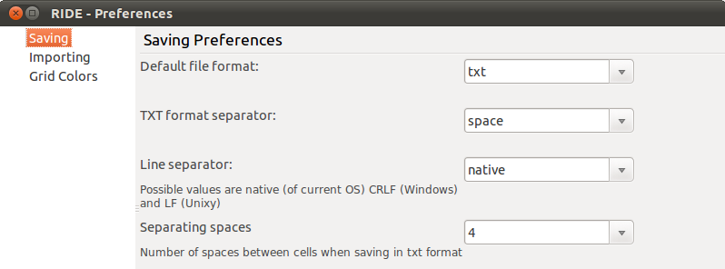

Figure 1. Tools > Preferences
雖然是簡單的偏好設定，但這裡頭確實存在很多的學問。尤其是 test data 可能由多個人共同編輯時，更要注意這裡的設定，否則就會失去 test data 是純文字的優勢。
RIDE 4.0 之將 .txt 的空白分隔字元數從原來的 2 個調整成 4 個，這會造成存檔過後，version console 認為整個檔案都有異動。
這個問題反應在 Issue 927，將空白分隔字元的數量提出成可以透過 Tools > Preferences > Saving > Separating spaces 來調整。雖然可以調整，但預設值還是 4；在 #927 裡有人提到希望將預設值改回 2，但開發團隊都認為新的預設值 4 比較好，而且改回 2 也會造成 0.4 版後新進使用者的困擾。
這對於 0.4 之前／之後新舊版本同時存在的團隊的確會是個困擾，根本的解決辦法應該就是全部昇到 0.4+ 了。
另外 Line Separator 的設定也很重要，如果使用者的 OS 有橫跨 Windows 跟 Unix-like 的話，要約定好採用一致的設定，否則會發生 diff 不出差異的狀況。